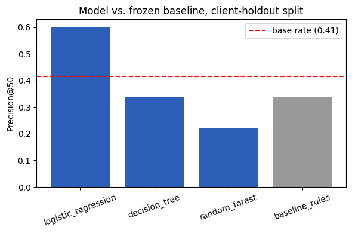
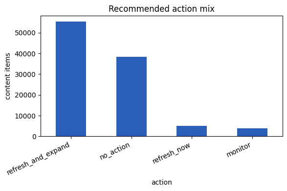

1. Introduction / Problem
A FlyRank content reviewer has limited time and a large inventory. Right now, deciding what to refresh first relies on manual judgment across hundreds or thousands of pages. This project builds a system that orders that inventory — so the reviewer opens the most promising candidates first, rather than working through it unranked.
The unit of analysis is one content item (a client/content pair), summarized over a 90-day feature window (Q1 2026) and evaluated against whether it declined over the following 30 days (April 2026). The output is a ranked queue with a score, a reason code, a recommended action (refresh_now, refresh_and_expand, monitor_ai_opportunity, monitor, no_action), and a confidence label.
The cost of a wrong call here is a decision-support risk, not a safety risk: a false positive wastes a reviewer's time on a page that wasn't really declining, a false negative means a genuinely declining page sits further down the queue. A fixed-weight hand rule can only combine a short list of conditions its author already anticipated, and can't represent conditional effects — for example, ranking position only matters once there's enough impression volume behind it. A model that can weigh several signals together, and learn interactions a linear rule can't express, is the thing actually being tested — and it has to re-earn that advantage on genuinely forward-split, warehouse-scale data.
2. Data
Source: the full FlyRank warehouse release (Hugging Face, gated access), tables dim_clients, dim_content, and fact_content_daily_performance. The raw private warehouse is never used outside this access pattern and never re-exported.
Features used: imp_90d, pos_90d, days_with_impressions_90d, ai_referral_share_90d, content_age_days — all computed strictly from the Q1 2026 window, or from an immutable content-creation date.
Deliberately excluded, and why:
- Anything dated on or after April 1, 2026 — the outcome window.
- A 90-day "recent query" table whose window is anchored to the snapshot's own end rather than the report's March 31 cutoff, so it silently overlaps the label period.
- A June 2026 sample table — the sealed test month; never opened anywhere in this project.
- A "content updated" timestamp, which reflects current state rather than history and was found to produce a negative "days since update" for ~75% of rows (a value from after the decision point).
trend_ratio_90das a model feature — tested directly and found to carry 68.4% of a decision tree's feature importance, well past a "suspiciously perfect" threshold. It shares a reference point with the label's own definition, creating a structural coupling rather than new signal (details in Results).
Leakage risk controls: the label-window aggregate used to build the target is never used as a feature — confirmed both by an in-code assertion and a deliberate injection test showing the score spike when it's added on purpose. The final pipeline re-runs this assertion as an automated check on every run: FEATURES contains no banned column: True.
Privacy: client and content identifiers are pseudonymous hashes used only for grouping and joining — never as model features, never mapped back to a real client. No client names, domains, URLs, page titles, or raw queries appear anywhere in this project's code, notebooks, or this page.
3. Methodology
Baseline
A transparent hand-written rule: a page is worth flagging if it's stale (created 180+ days before the decision point) and still visible (≥500 impressions in the trailing 90 days) — and among pages clearing both bars, ones whose recent 30-day pace is already falling get flagged first.
stale = content_age_days >= 180 visible = imp_90d >= 500 declining_now = trend_ratio_90d < 0.8 baseline_score = stale * visible * imp_90d * (1 + declining_now)
Every input is computed the same way, from the same Q1 window, as the model's features — same data, same label, same metric, same client-holdout split. It is frozen once model work starts and never re-tuned to chase the model's numbers.
Label definition
is_declining_next30 = 1 when April 2026's total impressions come in under 80% of the Q1 window's own last-30-day rate, else 0 — a threshold-defined proxy for "declining," built entirely from a window strictly after every feature.
Models compared
Logistic regression, a depth-3 decision tree, and a random forest (300 trees) — in that order of complexity, starting simple and adding complexity only if it earns its keep. Each model's predicted probability is used as a ranking score, evaluated at Precision@50, not as a bare yes/no classifier.
Validation design
A GroupShuffleSplit by client, 80/20, seed 42 — no client's rows appear on both sides of the split (asserted in code, not just claimed). A naive random row-level split is also computed on the same data specifically so the gap between the two is itself part of the reported evidence: a large naive-vs-grouped gap is a memorization-risk signal, not proof of real generalization.
Leakage checks run
- Feature-importance audit — any single feature carrying a suspiciously large share of a tree-based model's importance gets investigated.
- With/without robustness retraining — retrain once with a suspect feature, once without, and compare.
- Naive-vs-grouped split gap — computed for every candidate model.
- Label-injection test — deliberately add the label-window raw aggregate as a feature and confirm the score spikes, proving the leakage check itself is sensitive enough to catch real leakage.
4. Results
An initial run — with trend_ratio_90d included as a feature — showed the decision tree reaching Precision@50 = 0.900 against the baseline's 0.340. But that feature alone carried 68.4% of the tree's importance. Running the with/without robustness check across four independent notebook runs settled the tree's Precision@50 at 0.340 (an exact tie with baseline) and the random forest's at 0.220 (below baseline), once two full-pipeline runs landed on identical numbers.
| Model | ROC AUC | Avg precision | Precision@50 |
|---|---|---|---|
| baseline_rules (frozen) | 0.400 | 0.359 | 0.340 |
| logistic_regression | 0.482 | 0.432 | 0.600 — winning method |
| decision_tree (depth 3) | 0.530 | 0.415 | 0.340 (tie) |
| random_forest | 0.521 | 0.414 | 0.220 (loss) |
trend_ratio_90d excluded), the feature set actually used to build the production queue. Confirmed by two independent full-pipeline runs agreeing exactly. Base rate on this frame: 0.494 (102,769 rows, 30 clients); base rate on the held-out client split: 0.414.Logistic regression is the only model that beats the frozen baseline by a clear, non-marginal margin (+0.260) — and it does so at exactly the same value (0.600) across three independently-built runs, including one run that included the leaky feature and one that never did. That stability is what makes this a genuine result rather than a lucky split.

Naive-vs-grouped evidence
Across four separate checks, the naive-split (row-level, client-leaking) Precision@50 numbers ran far above the honest client-grouped numbers — gaps as large as +0.540 to +0.580 for the random forest. That gap is squarely in the range flagged as a memorization risk, which is why no model's naive number is ever quoted on its own anywhere in this project.
Error analysis
The decision tree's feature importances were dominated by trend_ratio_90d (68.4%), with days_with_impressions_90d (17.2%) and content_age_days (14.4%) picking up the remainder — a single feature towering this far over the rest is exactly the "suspiciously perfect" pattern that triggered the robustness check. Among the top 50 ranked test rows, the false positives were pages with high impressions and a high recent-trend ratio that still declined the next month — a seasonality/consolidation confound the Q1-only feature set has no way to see. The false negatives were real April decliners that looked flat or quiet on every available Q1 signal — nothing flagged them before the drop.

5. Limitations & Honest Framing
This is decision support, not a causal claim. Nothing here demonstrates that refreshing a flagged page will recover its traffic, and nothing here should be read as a prediction of how a search algorithm ranks content. The model orders a reviewer's limited attention; it does not decide for them.
What would make a specific recommendation wrong: the page is intentionally stable evergreen content that never needed a refresh; the apparent decline is seasonal, or demand moved to a sibling page (consolidation) rather than genuinely dropping; the page is too new for its Q1 window to mean much; a position or AI-referral signal is missing or noisy for that specific row; or the page was never observed in search rankings at all, which means it's scored from weaker evidence (impressions and trend alone).
Population-selection disclosure: rows require a full Q1 history and a minimum impression floor, both computed only from Q1-and-earlier information. Concretely, 27 of 104 total clients are excluded from this frame entirely for lacking a full Q1 window, leaving 30 clients with 102,769 eligible content items — this work makes no claim about the excluded clients' content.
Metric caveats: at 50 candidates out of an 11,733-row test set, Precision@50 is a coarse, noisy statistic — early robustness-check numbers for the tree and forest moved across runs (0.300→0.340 for the tree; 0.240→0.360→0.220 for the forest) before settling once two independent full-pipeline runs agreed exactly. That agreement, not any single run, is what makes the final numbers trustworthy. Random-forest results specifically can also shift a few points across scikit-learn versions; the direction and rough size of any lift over baseline is the stable claim, not a specific third decimal.
What this project does not attempt: it does not model why a page's ranking might change, does not account for algorithm updates, and was not tested against a held-out future time period beyond the single April 2026 window described here.
6. Ranked Recommendations
The ranked queue is the deliverable a reviewer actually opens: every row carries a score, a reason code, a recommended action, and a confidence label.
MODEL_DECLINE_RISK — the model flags real decline risk beyond what the baseline rule alone would catch.VISIBLE_MODEL_OPPORTUNITY — high visibility with model-identified upside.POSITION_UPSIDE — ranking position signal suggests room to move up.AI_REFERRAL_GAP — an AI-referral signal the baseline rule cannot see at all, by construction.STALE_VISIBLE_DECLINING / STALE_VISIBLE_STABLE — the baseline's own staleness+visibility logic.NO_ACTION — no strong signal in either direction.How to use it: open the high-confidence rows first — 19,208 of 102,769 rows (18.7% of the inventory), a small, inspectable slice rather than the whole queue at once. Read the reason code, sanity-check against the limitations above (seasonal dip? sibling-page consolidation? intentionally evergreen?), then decide refresh / expand / monitor / skip. medium/low rows are lower priority, not "ignore" — they mean the evidence is thinner. 28,194 rows sit within 5% of the high-confidence cutoff, so that line shouldn't be treated as a hard boundary.
The honest framing is not "no model beats the baseline" — it's "the simplest model does, clearly, and the more complex ones don't." The queue reflects logistic regression's ranking, plus it surfaces AI-referral and position-upside candidates the baseline rule cannot see at all, by construction.
7. Reproducibility
Every number on this page traces back to a committed notebook, run end to end in Google Colab against the live warehouse, with output receipts committed alongside the code.
- w05_model.ipynb — model training and the first leakage discovery
- w06_validation_audit.ipynb — honest-split re-run and leakage audit
- w07_action_playbook.ipynb — production queue build
- capstone.ipynb — full consolidated pipeline, confirms every number above
- capstone_report.md — the full technical report this page is drawn from
Seed: 42, fixed everywhere a split or model is initialized. Environment: pandas, numpy, scikit-learn, matplotlib, duckdb, huggingface_hub (exact versions in requirements.txt).
To rerun: clone the repo, install requirements, open each notebook in Colab (badges at the top of each), run top to bottom, supplying a Hugging Face read token when prompted. Each notebook re-pulls its own frame from the warehouse independently.
Receipts: the scored queue (work/outputs/action_playbook_queue.csv, 102,769 rows) and metrics file (work/outputs/model_results.json) are committed to the repo.